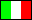

For more informations, consult the project page.
To browse source code, you can access CVS Tree
|
||
| Welcome! | ||
| Bienvenue! | ||
| ¡Bienvenido! | ||
| Willkommen! | ||
| Bienvenido!  | ||
|
For more informations, consult the project page. To browse source code, you can access CVS Tree | ||